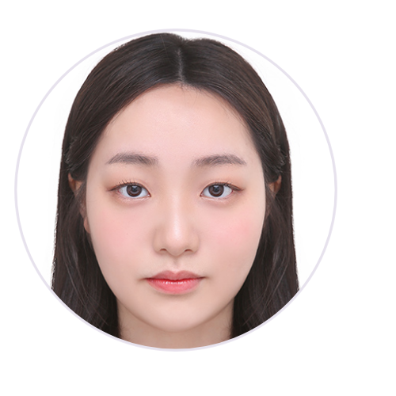

국립한밭대학교 컴퓨터공학과 · UST·KISTI 양자정보 연구인턴
안녕하세요. 양자정보와 AI를 연구하는 김연주입니다.
흉부 X-ray 분류와 주파수 특징을 연구해 왔습니다.
지금은 UST·KISTI에서 AI 모델에 양자 회로를 적용하고 있습니다.
모델을 바꿨을 때 무엇이 달라지는지 직접 실험하고 확인합니다.
양자컴퓨팅을 AI의 학습과 추론에 활용하는 연구를 이어가고 싶습니다.
Pattern Recognition · SCIE 제1저자* · 2026.09 게재 승인
* 공동 기여 표기